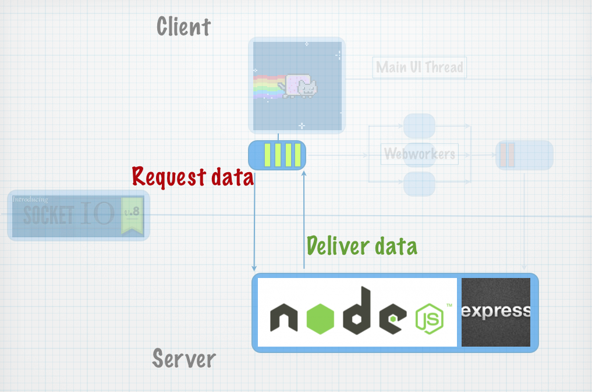
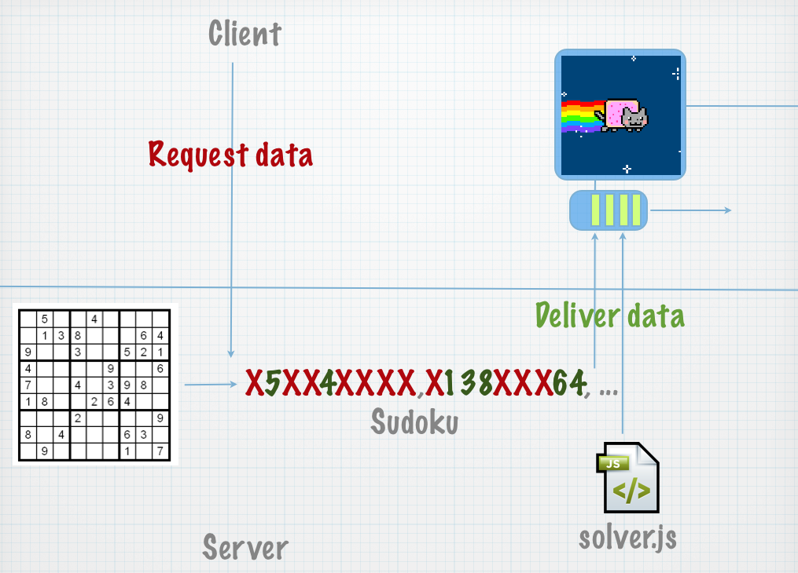
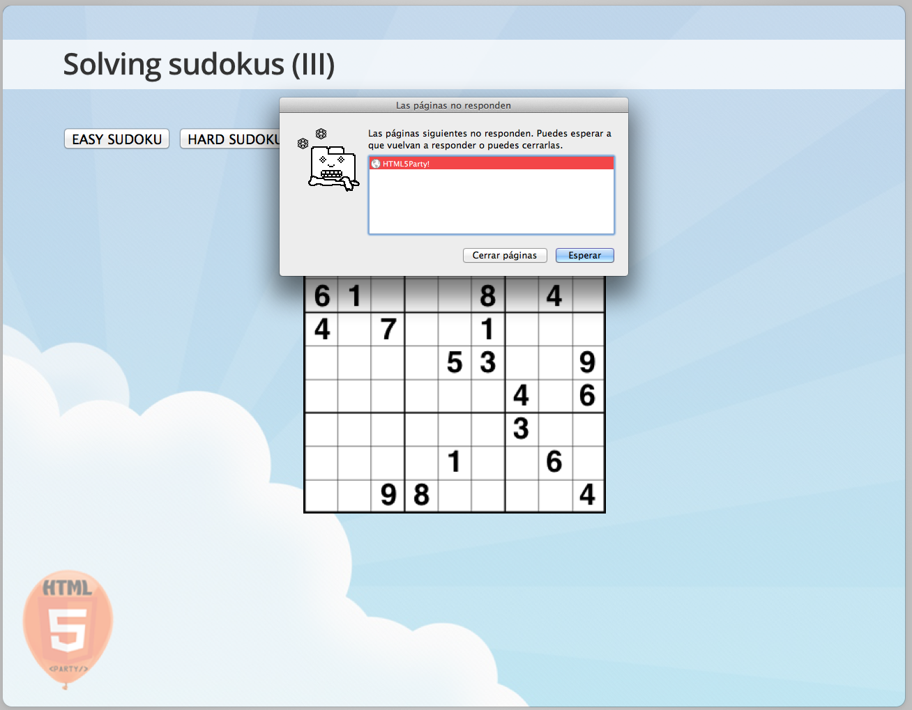

WebSockets wrapper 100% crossbrowser (uses flash, or even long-polling when no websockets available)
It adds some high level functions useful for real-time apps.
Javascript API almost identical to Websockets.
Setting up a server.
Setting up our server... (I)
//Launching express web framework and socket.io
var app = require('express').createServer();
var io = require('socket.io').listen(app);
//Setting up the webserver
app.listen(80);
//Routing the index
//Very similar to routing in other frameworks.
app.get('/', function (req, res) {
res.sendfile(__dirname + '/static/slides.html');
});
//Routing any other static files
app.get('/static/*', function (req, res) {
res.sendfile(__dirname + req.url);
});
I'm delivering my slides using this piece of code.
Setting up our server... (II) echo echo
io.sockets.on('connection', function (socket) {
socket.on('echo', function (data) {
socket.emit('echo', {message: data.message});
});
});
Echo client
var socket;
//connect socket
function connectSocket(){
socket = io.connect('http://localhost');
socket.on('connect', function(){
console.log("Socket connected!")
});
socket.on('echo', function(data){
console.log(data.message);
});
}
//trying the echo
function echo(data){
socket.emit('echo',{message:data});
}
Trying the echo...
Another architecture overview...

So what do we solve?
Finding a problem... (I)
We ask for a problem to solve.
The server delivers the problem.
The server points us to the script that can solve the problem.
The client solves the problem and sends the solution.
Finding a problem... (II)
This sample will work better with small easy problems
This way the socket permanent connection is 100% justified
To simplify the sample we will solve a common human issue... SUDOKUS, but you can put any other algorithm there, finding aliens, curing cancer or solving sudokus is exactly the same for a CPU.
Finding a problem... (III)

Requesting data with the client...
//CLIENT SIDE
function requestData(){
socket.emit('requestData',{});
}
socket.on('deliverData',function(data){
//data.problem && data.solver
})
Delivering the problem with node...
//SERVER SIDE
socket.on('requestData',function(socket){
socket.emit('deliverData', {problem: 'X5XX4XXX;X138XXX64;9XX3XX521;4XXXX9XX6;7XX4X398X;18XX264XX;XXX2XXXX9;8X4XXX63X;X9XXXX1X7',
solver: 'path/to/solver/sudoku.js'
});
});
JS in both sides => NO PARSING => HAPPY DEVELOPER
Let's try it!
Solving sudokus (I)
We are going to solve sudokus the easy way (for a computer).
We will use backtracking, out of the scope but basically is a brute force process.
There is better ways to solve sudokus, but backtracking will do it and some time takes seconds so we will see the examples working.
Of course we will represent the sudokus on html5 canvas =)
Backtracking puts valids numbers square by square if the sudoku reaches an invalid state it goes back and tries with the next candidate.
If interested take a look to sudoku_basic.js
Solving sudokus (III)
Just a hint of what will happen with a harder sudoku...

Background processing with webworkers.
Let's start with Webworkers.
Obviously we need to solve the sudokus in a separated thread.
The worker will use our basic backtracking library.
We need to know: how to create workers, and how to communicate with them.
//creating workers
var sudokuWorker = new Worker('sudoku.js');
//sending info to the worker
sudokuWorker.postMessage("X5XX4XXXX;..."); //or
sudokuWorker.postMessage({type:"sudoku",sudoku:"X5XX4XXXX;..."});
//receiving info
sudokuWorker.addEventListener('message', function(e){
/*process the data*/
},false);
Communicating from the webworker side...
//on sudoku.js
self.addEventListener('message', function(e){
var eventdata = e.data;
switch(eventdata.type){
case 'sudoku':
//Use external libs and execute remote scripts.
importScripts('path/to/sudoku_basic.js');
//backtracking code
var s = new Sudoku(eventdata.sudoku);
s.backtrack(0,0);
self.postMessage(s);
break;
};
},false);
//when we want to update the ui
self.postMessage('123456789;...');
//when we want to finish the worker
self.close();
Solving sudokus with webworkers...
Not bad... but...
We just show the final state.
In other scenarios we want the UI to be updated more often.
A good sample of an scenario like that would be calculating physics for a game.
Let's procrastinate an slide and take a look to one Seth Ladd box2D samples.